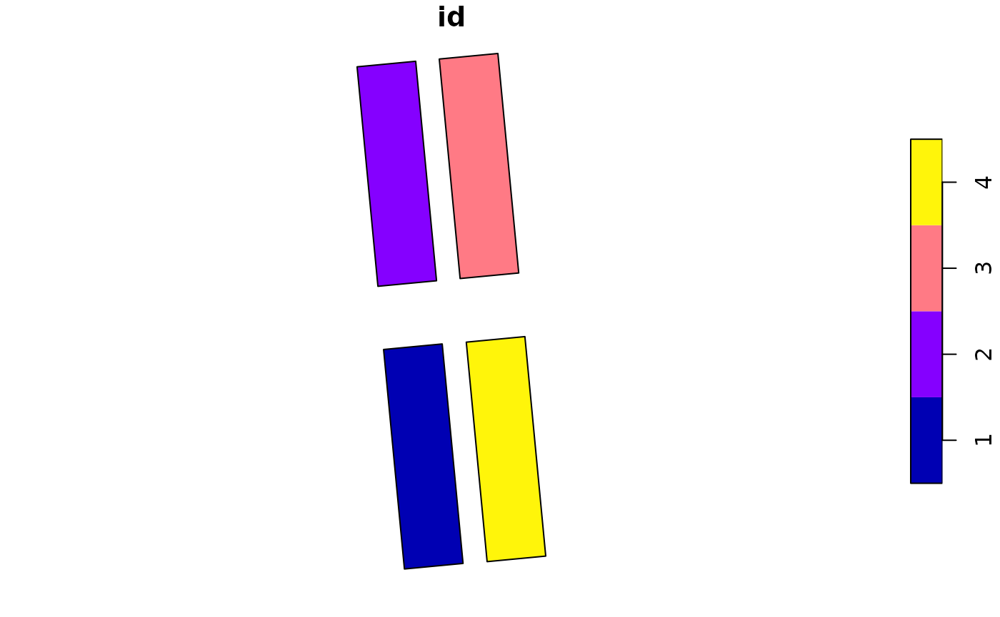
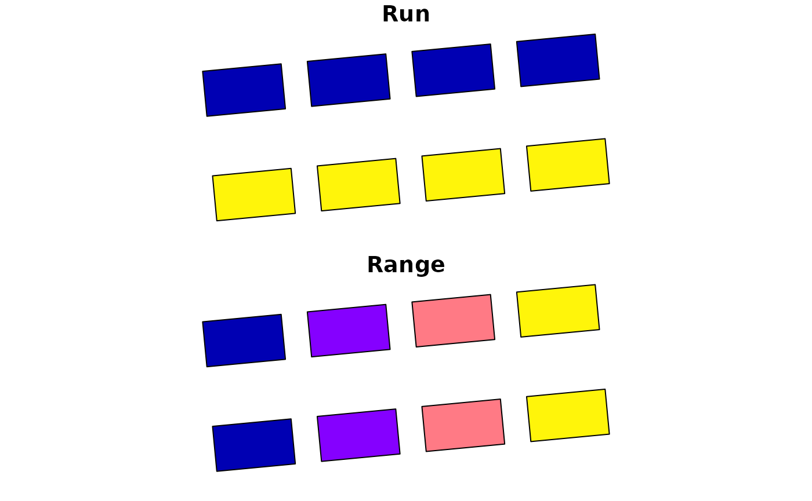
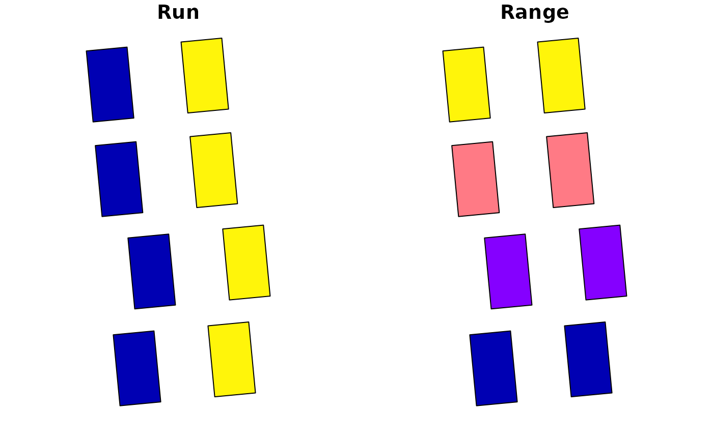

Introduction
plotPlotR package is developed to provide R users involved in field experiments to create or manipulate geo-spatial plot layouts for their experiments. This package is small and has a handful of functions to perform QGIS like field plot creation and manipulation which then can be used to extract values from different types of raster or adding values to plots and create shapefiles etc.
This package is particularly useful for users when working on raster data generated from Unmanned Aerial Vehicles (drones, UAVs) or if users want to associate non-spatial data to the plot data.
The core of plotPlotR is the creation of plot segments. If you have obtained corner points from Google Maps, Google Earth, GPS sensors on farm machine or from a GPS survey tool, then you will be able to create plots easily using the functions in this package. You can also assign Run and Range values to your plots which then can then be moved both vertically and horizontally to account for any discrepancies.
This package provide user friendly functions to deal with field plot creation and manipulation.
Good to know
It is strongly recommended that you use a CRS that are in meters.
Function read_input_dat() is a way users read data for
futher processing using this package. This function will help (enforce)
users to assign and change CRS of the input data. You may choose to use
epsg.io to find the appropriate CRS for
your region. The examples in this package uses CRS 28355, as we are based in
Australia.
-
Be familiar with the terminology used in this package. People who are not familiar with field operations may find the terminology used for arguments in functions new. Please refer to functions help menu or reference for more information. Below examples contains some terminology you may not be familiar with but are used extensively in this package.
-
Runis plots along tractor runs -
Rangeis the other axis -
exp_lengthrefers to length of your experiment (length of Runs) -
exp_widthrefers to width of your experiment
-
The package doesn’t call user to provide precise direction in North, South, East, West in most case. This is because, field experiments are not in aligned to any one direction and some users may not be able to precisely capture and record that information. Lot of functions in this package uses relative terms like, up, down, left, right, top and bottom. We believe this is easier for users to understand and use. Please refer to the documentation of functions where those relative terms are used.
Experiment layout
An experiment layout for the purposes of this package is a
rectangular grid layout, where each smaller rectangles are plots. The
plots can be represented by its position on two axis, Run
and Range. Plots along the direction of the tractor travel
are called Run and plots on the other axis are called
Range.
The experiments themselves has experiment length
exp_length which is akin to the length of a
Run and experiment width exp_width referring
to the length of a Range. exp_length is
measure plot length with gap multiplied by the number of ranges and
exp_width is tractor wheel width multiplied by the number
of runs. Each run has the maximum number of ranges and vice versa.
For several practical reasons, in most cases, experiment length are typically longer than experiment width but good not to make assumptions. There may be some cases when your experiment is part of a larger experiment, you many fewer ranges than runs, in that case your experiment length might be smaller that experiment width.
Run and Range may not the terminology you use. Rows, Runs, Row, Run, rowNo, runNo, row_Num, run_NUm are aliases for Runs that we have encountered. Similarly for Range, column, Column, col etc are used as alias. It is hard to deal with so many aliases, so try to be consistent and where needed provide what alias is being used in your experiment.
dat <- read_input_dat(cornersData, 4326, 28355)
corners_to_plots(sf_object = dat, #package includes cornersData
exp_length = 80, #number of ranges multiplied by plot length including gaps
exp_width = 24.2, #number of runs multiplied by tractor wheel width
n_runs = 11, #total number of runs
n_ranges = 20) #total number of ranges
#> [1] "make sure the orientation is correct!!"
#> Simple feature collection with 220 features and 0 fields
#> Geometry type: POLYGON
#> Dimension: XY
#> Bounding box: xmin: 654927.526180778 ymin: 6184366.13950962 xmax: 654957.58864967 ymax: 6184447.35525188
#> Projected CRS: GDA94 / MGA zone 55
#> First 10 features:
#> geometry
#> 1 POLYGON ((654933.6804280064...
#> 2 POLYGON ((654935.8738428378...
#> 3 POLYGON ((654938.0672576695...
#> 4 POLYGON ((654940.2606725009...
#> 5 POLYGON ((654942.4540873323...
#> 6 POLYGON ((654944.6475021640...
#> 7 POLYGON ((654946.8409169954...
#> 8 POLYGON ((654949.0343318269...
#> 9 POLYGON ((654951.2277466584...
#> 10 POLYGON ((654953.4211614899...Getting started
Reading data
The function read_input_dat() is used to bring your
coordinates data into the plotPlotR environment.
read_input_dat allows users to input a csv file path or a
dataframe loaded in the R environment or any common shape
file formats.
plotPlotR requires all shapefiles to have a Coordinate Reference System (CRS) and more importantly it requires coordinates in unit meters to compute different functions. Coordinate Reference System is a coordinates based system to locate geographical entities and is the core principles of GIS workflows. Most common CRS is WGS84 or EPSG 4326, which uses longitudes and latitudes to locate geographical entities. This CRS is what gets used in applications such as navigation systems, google maps, drone navigation etc. Orthomosaics generated using a stitching software often has CRS 4326.
When reading data from a CSV file or from a dataframe, users need to
supply the X and Y values using XY argument and the CRS
using the input_CRS arg. input_CRS argument
takes any default CRS formats, just entering the EPSG code as a number
works, for example input_CRS = 4326. XY
argument is not required if and when the csv file or the dataframe has
XY as the first two columns.
Here is an example of reading data using the
cornersData dataset included in the package.
read_input_dat function is used without declaring
to_CRS_M argument. NOTE: When to_CRS_M is not
supplied, plotPlotR automatically assigns a WGS 84 /
Pseudo-Mercator CRS.
dat <- read_input_dat(input_dat = cornersData,
input_CRS = 4326)
dat
#> Simple feature collection with 4 features and 1 field
#> Geometry type: POINT
#> Dimension: XY
#> Bounding box: xmin: 16551752.3556914 ymin: -4092173.30932014 xmax: 16551789.4505747 ymax: -4092074.50353949
#> Projected CRS: WGS 84 / Pseudo-Mercator
#> id geometry
#> 1 1 POINT (16551761.36137088015...
#> 2 4 POINT (16551789.45057468861...
#> 3 2 POINT (16551752.35569142177...
#> 4 3 POINT (16551780.27652684040...Here is an example of reading data with a to_CRS_M
agrument.
dat <- read_input_dat(input_dat = cornersData,
input_CRS = 4326,
to_CRS_M = 28355)
dat
#> Simple feature collection with 4 features and 1 field
#> Geometry type: POINT
#> Dimension: XY
#> Bounding box: xmin: 654927.929196909 ymin: 6184366.33173315 xmax: 654957.253986111 ymax: 6184447.22484282
#> Projected CRS: GDA94 / MGA zone 55
#> id geometry
#> 1 1 POINT (654934.0432855195831...
#> 2 4 POINT (654957.2539861107943...
#> 3 2 POINT (654927.9291969091864...
#> 4 3 POINT (654951.0031923596980...An example of reading data from a dataframe
dat <- cornersData
class(dat) ##dataframe
#> [1] "data.frame"
df_dat <- read_input_dat(input_dat = dat, input_CRS = 4326)Here is an example of reading input data when the dataframe or the
CSV file doesn’t contain X and Y as the first two columns.
read_input_dat function will convert the XY columns to
geometry and preserves all other columns.
dat <- cornersData
#rearranging and renaming columns and adding a new column to demonstrate read_input_dat function
dat <- dat[,c(3,1,2)]
colnames(dat) <- c("A","B","C")
dat$comment <- "some_gps_data"
df_dat <- read_input_dat(input_dat = dat,
input_CRS = 4326,
XY = c("B", "C"), # columns names of X and Y coordinates
to_CRS_M = 28355)
df_dat
#> Simple feature collection with 4 features and 2 fields
#> Geometry type: POINT
#> Dimension: XY
#> Bounding box: xmin: 654927.929196909 ymin: 6184366.33173315 xmax: 654957.253986111 ymax: 6184447.22484282
#> Projected CRS: GDA94 / MGA zone 55
#> A comment geometry
#> 1 1 some_gps_data POINT (654934.0432855195831...
#> 2 4 some_gps_data POINT (654957.2539861107943...
#> 3 2 some_gps_data POINT (654927.9291969091864...
#> 4 3 some_gps_data POINT (654951.0031923596980...Writing data
Writing outputs of plotPlotR is done through calling
write_output_obj() function. This function takes two
arguments; output_dat and file_name. File name
is the file path with the desired extention type. For example
geoJSON, kml etc.
dat <- read_input_dat(input_dat = cornersData,
input_CRS = 4326)
#write_output_obj(dat, "path_to_folder/file_name.geoJSON")Creating plot layout
Creating plot layout is the core function of the plotPlotR package and it can be done in one of two ways depending on what information is available.
- From 4 coordinates or sets of 4 coordinates representing the corners
of the experiment with center of corners being the center of the
experiment. Function
corners_to_plotsis used to generate plot layouts from the corner points. The corner points, themselves can be generated using different ways, if you have a raster you can use the functioncollect_cornersto get corner points. Users can also use services such as google earth, QGIS, Ground Control Points data to get 4 corner points. - From trip points generated from tractors/seeders etc using the
make_plotsfunction. Modern tractors uses GPS or similar systems to drive on a paddock to sow seeds etc. These trip points, one for each plot can be used to create a field layout. Variation of make plots, is splits plots, where two or three varieties are sown in each plot. Users can usemake_split_plotsfunction to generate split plots from one trip point or from the plot layout generated usingcorners_to_plots
Corners to plots
corners_to_plots uses corners data provided to calculate
the center and the orientation of the experiment. From the exp_length,
exp_width, n_runs, n_ranges arguments a rectangular grid with the
specified number of Runs and Ranges are generated.
Optional exp_orientation sets the orientation of the
experiment, Runs can be aligned North-South (vertically) or East-West
(horizontally) in the rectangular grid. Sizes of plots generated can be
customised using the optional plot_length and
plot_width argument.
NOTE: Orientation of the exp is correlated to experiment length
exp_length, the orientation of the Run, length
of the plots. If the orientation of the experiment is in
NS, then the exp_length,
plot_length and the Run are in the same
direction.
dat <- read_input_dat(input_dat = cornersData,
input_CRS = 4326,
to_CRS_M = 28355)
plots_data <- corners_to_plots(sf_object = dat,
exp_length = 80,
exp_width = 40,
n_runs = 2,
n_ranges = 4)
#> [1] "make sure the orientation is correct!!"
plot(plots_data)Changing the orientation of the experiment to EW
East-West using the optional exp_orientation argument
plots_data <- corners_to_plots(sf_object = dat,
exp_length = 80,
exp_width = 20,
n_runs = 2,
n_ranges = 4,
exp_orientation = "EW")
plot(plots_data)Specifying plot length and plot width using the OPTIONAL
plot_length and plot_width argument
plots_data <- corners_to_plots(sf_object = dat,
exp_length = 80,
exp_width = 40,
n_runs = 2,
n_ranges = 4,
plot_length = 15,
plot_width = 8.6)
#> [1] "make sure the orientation is correct!!"
#> [1] 355.56577092882281477
plot(plots_data)Points to plots
If you have coordinates (points) for each plot in the experiment, say
from a seeder or other device, the function make_plots()
can be used to create plot layouts of the experiment.
make_plots function takes coordinates as points (a shape
file or an sf object with POINT geometry) as input and using the
plot_length() and plot_width() arguments
generates the plot layout.
In the below example, I am using cornersData as
coordinates of 4 plots. Then using make_plots() function, I
am generating a plot layout.
plot_layout <- make_plots(points_data = dat,
plot_length = 75,
plot_width = 20)
#> [1] 355.56577092913175875
plot(plot_layout)
Split plots
Split plots are type of field experiments where more than one
genotype/variety is sown at each plot. make_split_plots()
function allows users to create a split plot layout from plot center
points or from plot layouts generated using
corners_to_plots.
oneplot <- corners_to_plots(dat,
exp_length = 80,
exp_width = 30,
n_runs = 5,
n_ranges = 8)
#> [1] "make sure the orientation is correct!!"
split_plot_layout <- make_split_plots(oneplot,
split_dist = 2,
split_into = 2,
plot_length = 7.5,
plot_width = 2)
#> [1] 355.56577092688229413
plot(split_plot_layout)Plot manipulation
plotPlotR provides functions to transform experimental layouts in a few different ways. For easier transformation, plots needs to be identified by its coordinates, i.e. each plot get assigned values of Run and Range. Runs and Ranges are a common local coordinate reference system used in field experiment to identify a plot. Runs and Ranges are unique to each experiment and has no absolute reference to the experiment spatially. This simple system however is quite useful and adequate for people working on field experiments.
Adding Run and Range values
addRunRange() function adds Run and Range values to the
plots in the experiment. For assigning Run and Range values, users need
to provide three pieces of information. The number of Runs using the
n_runs argument, number of Ranges using the
n_ranges argument and the position of the Row 1 and Range 1
using the run1_range1 argument. The argument
run1_range1 takes one of 4 values from “TR”, “TL”, “BR” and
“BL” which represents top right, top left, bottom right and bottom left
respectively.
NOTE: The southern end is the bottom of an experiment in North-South direction and similarly the eastern end is the bottom of the experiment in the East-West direction. Assuming someone standing at the bottom of their experiment looking at the top end, their left side is the left side of the experiment and similarly their right side is the right side of the experiment.
plots_data <- addRunRange(plots_data,
run1_range1 = "BL",
n_runs = 2,
n_ranges = 4)
plot(plots_data)
Lets explore few transformations
Rotating the whole experiment layout
rot_plots() functions takes a sf-object and rotate on
its center by the value provided in the rotation_angle
argument. Users can rotate the whole experiment or just the plots using
the selection option. Rotation angle is declared in degrees
and can be positive or negative value.
plot(plots_data)
rotated_exp <- rot_plots(sf_object = plots_data, rotation_angle = 90, selection = "experiment")
plot(rotated_exp)
Rotating individual plots
Rotating individual plots is similar to rotating the entire experiment, only difference being the orientation of the experiment will be the same and individuals plots were rotated on its axis.
plot(plots_data)
Plot displacement
Plots (or experiments as a whole) can be moved horizontally, vertically, along its run or range or along the compass direction in a number of ways using functions in plotPlotR.
Moving runs can be done using the movePlotRuns()
function. Movement of plots are done through two arguments,
moveDirection and moveDistane.
moveDirection takes “left”, “right”, “up” or “down” and
moveDistance takes a distance value in meters. There is a
optional argument runSelection, which when not supplied
applies the movement to all plots.
moved_run <- movePlotRuns(plots_data, moveDirection = "up", moveDistance = 5, runSelection = 2)
plot(moved_run)Similarly plots can be moved range wise. By default when
rangeSelection is not supplied, all Ranges are moved.
moved_range <- movePlotRanges(plots_data, moveDirection = "right", moveDistance = 5, rangeSelection = 2)
plot(moved_range)
Entire experimental layout can be moved north, south, west or east
direction using the moveAllPlots() function through
supplying distance to move horizontally and vertically.
xy_move is a vector of length two, first element is the
distance to move in X direction and the second element being the Y
direction.
moveAllPlots(plots_data, xy_move = c(2,4))
#> Simple feature collection with 8 features and 2 fields
#> Geometry type: POLYGON
#> Dimension: XY
#> Bounding box: xmin: 654927.400918932 ymin: 6184372.25402825 xmax: 654961.713911517 ymax: 6184449.24073325
#> Projected CRS: GDA94 / MGA zone 55
#> Run Range geometry
#> 1 1 1 POLYGON ((654933.1995187080...
#> 2 2 1 POLYGON ((654953.1396535396...
#> 3 1 2 POLYGON ((654931.6532254343...
#> 4 2 2 POLYGON ((654951.5933602662...
#> 5 1 3 POLYGON ((654930.1069321610...
#> 6 2 3 POLYGON ((654950.0470669928...
#> 7 1 4 POLYGON ((654928.5606388874...
#> 8 2 4 POLYGON ((654948.5007737195...